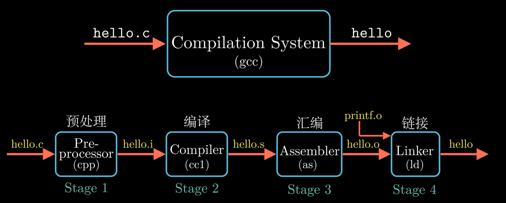
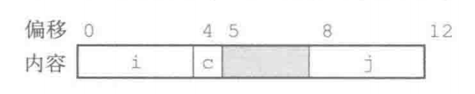
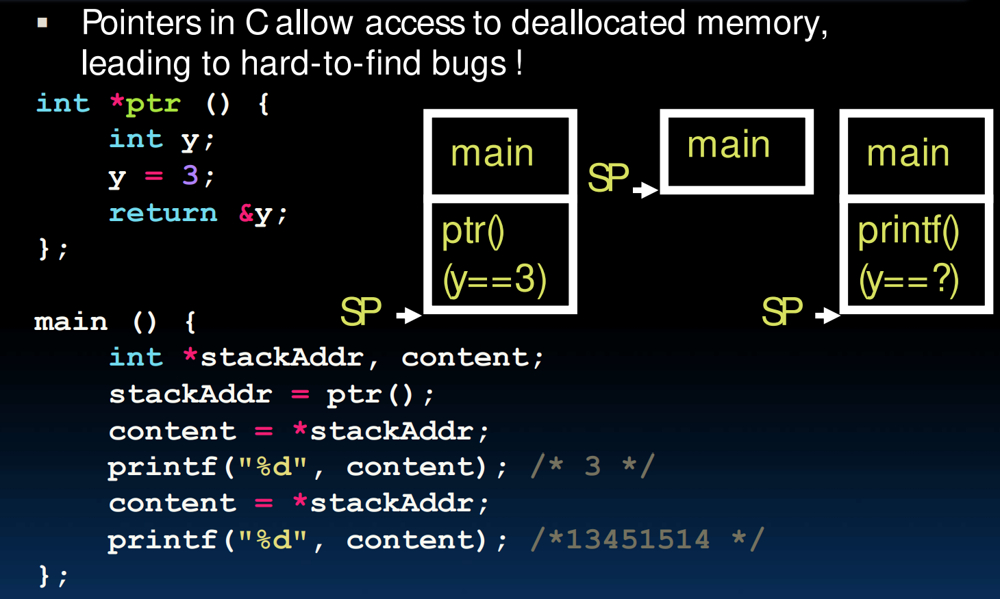

C语言复习
约 1529 个字 41 行代码 4 张图片 预计阅读时间 6 分钟
1. 编译
与Python、Java不同，C语言的编译与处理器类型（如MIPS，x86，RISC-V）和操作系统（如Windows、Linux、MacOS）相关．正是因为它对不同的架构做了针对的优化，其运行速度能远超其他高级语言．
编译过程

预处理器会根据以 # 开头的代码，来修改原始程序．它会读取头文件（如 \<stdio.h>）的内容并直接插入到程序文本中，同时替换所有的宏定义．这个阶段还未触及复杂的语法，只是纯粹的文本替换．
经过预处理器处理后得到的文件通常以 .i 结尾．
宏定义陷阱
有时候我们使用宏定义来写出一些函数，例如：
#define min(X, Y) ((X) < (Y) ? (X) : (Y))
在某些情况下可能会出现错误．例如当Y是一个返回值为整数的函数时，该函数会被调用两次，可能会对结果产生影响．
编译器将 hello.i 文件翻译成汇编程序 hello.s，这一过程即为编译．编译包括词法分析、语法分析、语义分析、中间代码生成以及优化等一系列中间操作．
汇编器将汇编程序 hello.s 翻译成机器指令，并将这一系列机器指令按照固定规则打包，得到可重定向目标文件——hello.o．此时 hello.o 是二进制文件，无法再用文本编辑器直接阅读．
hello.o 需要和预编译好的目标文件（如 printf.o，它存在于标准 C 库中）进行合并，最终得到可执行目标文件 hello．
2. 变量类型
C语言中的整数类型包括 long long long int short，在不同的架构下只保证：sizeof(long long) >= sizeof (long) >= sizeof(int) >= sizeof(short) 以及 short 至少为16bits、long 至少为32bits．这也就是推荐使用 intN_t 与 uintN_t 的原因，可以增强跨系统能力．
3. 指针
指针变量的存储内容是地址．这也是C语言常用于底层操作的原因：指针可以直接对内存进行操作，极大提高了C语言的上限．
例如，在Python中将函数作为参数传入的操作，在C中可以通过函数指针实现．例如我们想要传入一个整型数组以及一个接受整型返回整型的函数，对数组的每一个元素都做一次函数操作，在Python和C中的实现分别为：
def x10(x):
return 10 * x
def mutate_map(a, fp):
for i in range(len(a)):
a[i] = fp(a[i])
a = [3, 1, 4]
print(*a)
mutate_map(a, x10)
print(*a)
#include <stdio.h>
int x10(int x) {
return 10 * x;
}
void mutate_map(int a[], int n, int (*fp)(int)) {
for (int i = 0; i < n; i++)
a[i] = (*fp)(a[i]);
}
int main() {
int a[] = {3, 1, 4}, n = 3;
for (int i = 0; i < n; i++)
printf("%d ", a[i]);
printf("\n");
mutate_map(a, n, &x10);
for (int i = 0; i < n; i++)
printf("%d ", a[i]);
}
4. 内存
4.1 数据对齐
CPU访问内存时通常是按照固定字长读取的，如在32-bit架构下一次读取4字节，在64-bit下一次读取8字节．
假设内存索引从0开始，对于读取4字节的 int 类型，理想情况是[0 1 2 3]；但如果数据没有对齐，如地址位于[1 2 3 4]，CPU就要分两次读取：第一次读取[0-3]，第二次读取[4-7]．为了提高内存系统性能，要对数据进行对齐．
对齐原则是：任何K字节的基本对象的地址必须是K的倍数：如 char 类型可以是任意地址，而 int 类型一般而言需要是4的倍数，long long 一般需要是8的倍数．对于不对其的内容，编译器会在字段的分配中插入空字节间隙以实现对齐．另外对于结构体而言，结构体占用内存大小必须是结构体内最大基本类型大小的倍数．
例
考虑下面的结构声明
struct S1 {
int i;
char c;
int j;
}

再考虑下面的结构声明
struct S2 {
char c;
long long i;
}
4.2 内存管理
C语言有4个内存区：
+ 代码区：存储代码，从运行到结束始终不改变
+ 静态变量区：存储全局变量和常量，占用内存大小不会改变
+ 堆区：存放动态分配的内存（如 malloc），占用内存直到被 free．在内存地址中是向上生长的．
+ 栈区：存放局部变量、形参、返回地址（栈帧），在调用的函数结束时内存被释放，在内存地址中是向下生长的．
（图片来自AI生成）

4.2.1 栈区
调用函数时，会产生栈帧：包含返回地址、参数、局部变量．栈帧在栈区内存中连续排列，并且有一个stack pointer指向栈顶．
当一个函数结束时，栈帧出栈，此时stack pointer移动，但是刚才占用栈区的内存没有恢复（C语言经典留垃圾）；例如以下程序

创建局部变量后返回，栈区被回收但是&y 处存放的垃圾值还是3，所以第一次得到的content是3；之后调用了 printf,此时原处存放的垃圾值被修改，再次打印就会出现奇怪的结果．
4.2.2 堆区
有关操作：
malloc()从堆区申请指定字节数的、未初始化的内存，并返回void*类型．free()用于清理动态分配的内存realloc(p, size)调整之前分配的内存块的大小．调整后内存块可能会移动到新的地址．
底层实现：
为了让 malloc 和 free 开销小、跑得快、避免碎片化（堆里有很多空闲字节，堆区有如下实现细节：
- Header：每一个内存块都有一个 header，其由两个数据组成：内存块的大小、指向下一个内存块的指针．
- Free List：所有空闲的内存块都被保存在一个循环链表里．
- 合并：
free()会检查相邻的内存块是否也空闲，如果是就合并成更大的内存块，反之就直接把释放的内存块加入 Free List．
分配内存时的选块策略：
- Best-fit：选择空间足够的块中最小的．
- First-fit：选择第一个空间足够的块．
- Next-fit：在 first-fit 的基础上，下一次寻找块从上一次结束处开始而不是从头开始．
堆区容易引发的bug
- 内存泄漏：申请的内存没有释放，这块内存空间无法再使用
- 释放后使用：释放内存后再次使用会破坏其他正在使用这块内存的数据
- 两次 Free：有可能会破坏
malloc内部的管理数据结构． - 丢失原指针：修改申请内存后返回的指针，例如执行
ptr++．此时ptr会找不到该内存块的 header，不知道该内存块的大小，导致内存系统崩溃． - 乱用
realloc：realloc可能会把内存块移动到新的地址，如果还保留原地址的指针并试图写入数据会出问题．